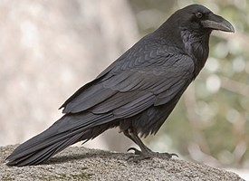

1. 'Catherpes mexicanus' is a small North American songbird of the family Troglodytidae. It is generally found in arid, rocky cliffs, outcrops, and canyons. Which species is this?
2. 'Falco sparverius' is the smallest and most common falcon in North America. It varies in size from about the weight of a blue jay to a mourning dove. Which species is this?
3. 'Cardinalis sinuatus' Dapper in looks and cheerful in song, this bird is a tough-as-nails songbird of baking hot deserts in the American Southwest and northern Mexico. Which species is this?
4. 'Melanerpes uropygialis' A conspicuous resident in the deserts of the Southwest and Mexico, it is a characteristic bird of the saguaro cactus forests. Which species is this?

5. 'Corvus corax' This bird is among the smartest of all birds, gaining a reputation for solving ever more complicated problems invented by ever more creative scientists. Which species is this?
6. 'Haemorhous mexicanus' They are frequent visitors to bird feeders throughout the year, particularly if stocked with sunflower or nyjer seed, and will congregate at hanging nyjer sock feeders. Which species is this?
7. 'Geococcyx' Because of its quickness, this bird is one of the few animals that preys upon rattlesnakes; it is also the only real predator of tarantula hawk wasps. Which species is this?
8. 'Buteo jamaicensis' This hawk is a bird of prey, one of three species colloquially known in the United States as the "chickenhawk," though it rarely preys on standard-sized chickens. Which species is this?
9. 'Zonotrichia leucophrys' This bird appears each winter over much of North America.They have different songs, according to where they live. Which species is this?

10. 'Spinus tristis' These are active and acrobatic little birds that cling to weeds and seed socks, and sometimes mill about in large numbers at feeders or on the ground beneath them. Which species is this?